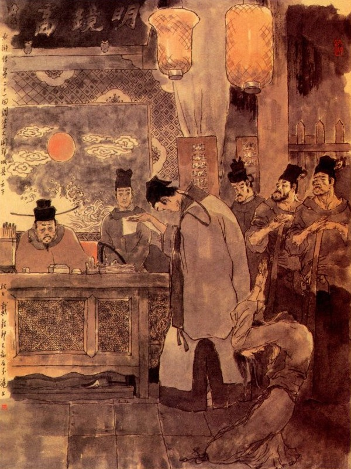
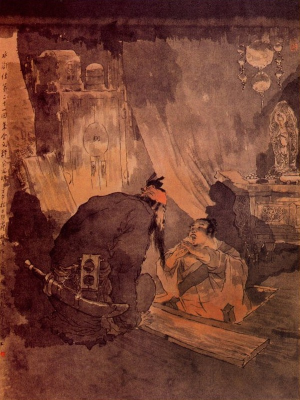
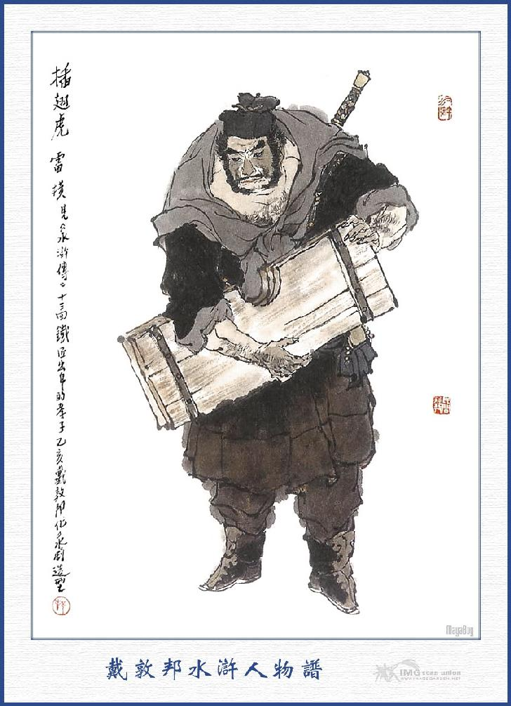

Khi đó chúng đem Diêm Bà cùng Đường Ngưu Nhị vào đến huyện quan. Huyện nghe nói việc giết người, bèn vội vàng ra công đường để hỏi. Chúng dẫn Diêm Bà quỳ bên hữu, Đường Ngưu Nhị quỳ bên tả rồi quan Huyện ngồi trên hỏi rằng:
- Việc gì? Giết người thế nào? Nói ta nghe.
Diêm Bà bẩm:
- Lão tôi người họ Diêm, có con gái tên là Bà Tích, dạo nọ bán cho Tống Áp Ty làm tỳ thiếp, đến hôm qua con gái tôi cùng Tống Giang uống rượu trên gác thì có tên Đường Ngưu Nhị này đến sinh sự rồi ra phố chửi rủa ầm ầm, cả phố sá ai cũng biết. Sáng hôm nay thấy Tống Giang ở nhà ra phố một lúc rồi trở về mà giết chết con gái tôi, sau tôi kéo được Tống Giang đến cửa huyện thì bị tên Đường Ngưu Nhị này lại đánh tháo cho đi mất, vậy xin kêu để quan lớn xét cho.
Tri Huyện hỏi đến Đường Ngưu Nhị rằng:
- Sao thằng kia dám đánh tháo cho kẻ hành hung?
Bẩm quan lớn: - Con không biết đầu đuôi ra sao cả, nguyên tối hôm qua con có đến tìm Tống Áp Ty ở đấy thì bị mụ này đuổi ra. Sáng hôm nay con đi bán hàng sớm, lại thấy mụ này đương lôi kéo Tống Áp Ty, nên con chạy đến để can rồi Tống Áp Ty bỏ đi đâu mất thực là không biết chuyện giết người chi cả.
Quan Huyện quát lên rằng:
- Mầy nói láo! Tống Giang là người thành thực quân tử, có khi nào lại giết càn như thế? Việc này chắc chính mày làm ra, tả hữu đâu?
Tri Huyện nói đoạn, liền gọi nha lại lên thấy khẩu cung. Bấy giờ Trương Văn Viễn nghe nói là Tống Giang giết con Diêm Bà là nhân tình của mình thì trong lòng tức giận, vội vàng ra lấy khẩu cung mọi người rồi lại viết đơn giúp cho Diêm Bà để kêu. Đoạn rồi đem các người kêu biên án và cho gọi Trưởng Phố và các nhà lân bang, đến mở cửa nhà Diêm Bà để khám nghiệm xác chết. Khi tới nơi, khám thấy người chết bị mấy nhát dao trên đầu và ở thái dương, còn con dao hành hung thì vất trên xác. Chúng biên khám đoạn rồi cho lấy áo quan mà bỏ xác chết vào mà đem ra quàn tại tự viện rồi đem các người ấy về trình huyện.

Quan Huyện xưa nay đối với Tống Giang rất là tử tế, có ý muốn thoát tội cho Tống Giang, liền bắt Đường Ngưu Nhị ra mà tra hỏi ba bốn lần. Đường Ngưu Nhị nhất định cung rằng:
- Không biết đầu đuôi chuyện giết người ra sao cả.
Tri Huyện nói:
- Thằng này, nửa đêm mày đến nhà người ta mà sinh sự cãi cọ thì tất có can thiệp đến đây.
Đường Ngưu Nhị lại kêu:
- Bấy giờ con chỉ tìm Tống Áp Ty có chút việc chứ thực không có ý gì cả.
Tri Huyện quát lên rằng:
- Nói lạ! Tả hữu đâu, đem đánh nó xem!
Quan Huyện vừa nói dứt lời, thi hai tên lính như hùm như beo đổ ra, trói Đường Ngưu Nhị đánh đến ba bốn mươi roi. Đường Ngưu Nhị tuy bị đau, nhưng vẫn cứ khăng khăng nói một mực như trước. Khi ấy quan Huyện cũng biết rằng không phải tự Đường Ngưu Nhị, song nhất tâm định cứu cho Tống Giang được thoát, liền lấy hạng gông lớn gông Đường Ngưu Nhị lại rồi giam vào nhà giam. Trương Văn Viễn lên công đường bẩm với quan Huyện rằng:
- Đã đành quan xử thế, song việc này hiện còn có con dao bên cạnh người chết là con dao của Tống Giang, vậy thế nào cũng phải bắt Tống Giang đến hỏi, mới biết đoan đích được.
Quan Huyện bị Trương Văn Viễn kêu đi kêu lại, không thể nào mà im được, bất đắc dĩ phải sai người đi bắt Tống Giang. Sau bắt không được Tống Giang, lại phải bắt mấy người lân bang đến hỏi thì ai cũng khai Tống Giang đi đâu mất, không thấy đâu cả.
Trương Văn Viễn lại bẩm với quan Huyện rằng:
- Phạm nhân là Tống Giang đi trốn đi mất, song hiện còn bố là Tống Thái Công và em là Tống Thanh ở trong thôn trang, vậy xin đến đó bắt bố cùng em phải đến quan rồi lặc hạn cho đi tìm phạm nhân để đem về nộp thì hắn không còn trốn đi đâu được nữa.
Quan Huyện nghe nói, biết rằng phải lẽ, song chủ ý cốt tha cho Tống Giang, nên cứ dùi rằng đổ tội cho Đường Ngưu Nhị để sau sẽ kiếm kế mà gỡ dần ra.
Ai ngờ Trương Văn Viễn cố lòng thu xếp văn án rồi lại xúi giục Bà Tích đến kêu nài mọi lẽ làm cho quan Huyện không còn thể nào mà bỏ im đi được, đành phải thảo công văn, sai ba tên lính, đến Tống gia trang để bắt Tống Thái Công và Tống Thanh. Khi ba yên lính đi đến Tống gia trang, Tống Thái Công ra đón tiếp mời vào thảo đường rồi mấy người lính đưa công văn ra cho Tống Thái Công xem. Tống Thái Công xem xong bảo với bọn lính rằng:
- Xin các bác hãy ngồi chơi, để tôi thưa chuyện: Nguyên lão tôi từ thuở trước vẫn chăm chỉ việc canh nông, quanh năm trông nom vườn ruộng ở đây, để kiếm kế sinh nhai, không hề có điều chi trái phép. Còn như thằng con bất hiếu là Tống Giang thì nó vẫn ngỗ nghịch từ thuở nhỏ, không chịu theo giữ phép nhà mà nhất định đi làm lại. Sau tôi can gián nó cũng không nghe, nên hồi mấy năm trước tôi đã đến quan để trình sự ngỗ nghịch của nó và xin xuất tịch tên nó không nhận là người ở trong trang này nữa. Từ đó nó vẫn ở đâu ngoài Huyện, còn tôi đây cùng con là Tống Thanh vẫn làm ăn quanh quẩn trong chốn thôn ở gần đây, hai đằng tịnh không có điều gì can thiệp đến nữa. Tôi lại e khi nó làm gì trái phép mà liên lụy đến tôi, cho nên tôi có xin chữ quan trước phê cho để làm bằng chứng, hiện còn giữ đây ở kia, để tôi lấy ra cho các bác sao lại, đem về trình quan.
Bọn lính vốn xưa nay có lòng tử tế đãi với Tống Giang và thấy Tống Thái Công đã có bằng cớ, không can thiệp gì đến với Tống Giang thì cũng không tội chi mà bới vẽ thêm rầy, liền nói với Thái Công rằng:
- Vâng, nếu cụ đã có giấy má như vậy thì xin cho chúng tôi sao lại, để đem về trình huyện cho xong.
Tống Thái Công nhất diện sai người giết gà vịt làm cơm, để thiết đãi bọn lính, nhất diện đem giấy ra cho bọn ấy sao rồi lại đưa mười lạng bạc ra để tiễn. Xong đâu vào đấy, chúng liền từ giã Thái Công trở về huyện bẩm với quan trên mọi lẽ và đưa bản giấy sao ra để trình.
Quan Huyện cũng không có lòng nào muốn bắt Tống Giang, nay thấy báo về vậy thì cũng lấy làm vừa ý mà bảo chúng rằng:
- Ông lão ấy có giấy quan làm bằng đây, vả chăng Tống Giang cũng không còn có thân thuộc nào nữa thì truy nã vào đâu được? Bây giờ chỉ có một lẽ treo thưởng một nghìn quan tiền để yết thị đi các nơi, cho người ta bắt giúp mà thôi.
Trương Văn Viễn lại xúi Diêm Bà làm bộ rũ rượi lăn khóc mà kêu lên với Quan Huyện rằng:
- Việc ấy thực là Tống Thanh còn dấu diếm Tống Giang ở trong nhà, xin quan lớn thương đến thân già mà cứ cho đi bắt Tống Giang đến đây cho.
Quan Huyện quát lên rằng:
- Ba bốn năm trước phụ thân nó đã lên cáo tội ở quan để truất tịch đi rồi, hiện có giấy quan phê ở đây, còn bắt thế nào nhà người ta được nữa?
Diêm Bà lại kêu rằng:
- Bẩm quan lớn, ở đây ai không biết anh ta là Hiếu Nghĩa Hắc Tam Lang, vậy giấy này chắc là giả mạo, xin tướng công xét kỹ lại cho.
- Bây nói lạ! Hiện có chữ và ấn tín của quan trước phê cho mà mày bảo giả mạo thế nào?
Diêm Bà thấy quan truyền vậy thì rên rỉ khóc lóc mà rằng:
- Việc mạng người là to, nếu tướng công không xét cho thì tôi xin lên Châu Phủ tôi kêu lên, để quan trên xét. Con tôi chết oan khổ lắm!
Bấy giờ Trương Văn Viễn lại ở ngoài kêu luôn với quan Huyện rằng:
- Việc này nếu tướng công không cho người đi thì mụ này tất nó lên kêu ở thượng ty, bấy giờ lỡ ra quan trên có đòi đến thì khó lòng mà trả lời sao được!
Quan Huyện nghe nói, không biết làm thế nào được, đành phải cho thảo công văn, sai Chu Đồng, Lôi Hoành đem lính đến Tống gia trang mà vây bắt Tống Giang. Hai Đô Đầu Lĩnh công văn đem bốn mươi tên lính đến Tống gia trang, Tống Thái Công nghe báo, vội vàng ra để nghinh tiếp. Lũ Chu Đồng bảo với Thái Công rằng:
- Xin Thái Công tha lỗi, chúng tôi vâng lệnh quan sai đến đây để bắt Tống Giang, vậy Tống Giang ở đâu, xin Thái Công cho biết?
Tống Thái Công đáp:
- Xin nhị vị Đô Đầu xét cho: Thằng nghịch tử Tống Giang đối với tôi không có can thiệp chi cả. Hiện trước tôi đã có giấy kêu quan, quan đã phê cho làm bằng. Trong mấy năm nay nó đã lập ra sổ bộ khác, không còn ở đây với tôi và cũng không về đến đây bao giờ.
Chu Đồng nói:
- Đã đành như vậy, song chúng tôi là kẻ công nhân cứ theo giấy bắt người, vậy không biết rằng trong trang có ai hay không? Cũng phải cho chúng tôi khám hết một lượt rồi mới về bẩm quan được.
Nói xong liền cho binh bổ vây khắp bốn mặt gia trang; rồi tự đứng canh trước cửa mà bảo Lôi Hoành vào khám tìm một lượt. Lôi Hoành đi vào trong trang, tìm khắp cả đằng trước đằng sau rồi ra bảo với Chu Đồng rằng:
- Thực ở trong trang không thấy.
Chu Đồng nói:
- Tôi chưa được vào khám thì chưa lấy gì làm chắc, vậy bác hãy giữ ngoài cửa đây, để tôi vào khám kỹ lại lượt nữa xem sao?
Tống Thái Công nói:
- Lão tôi là một người biết pháp luật, có khi nào dám dấu ở trong trang!
Chu Đồng nói:
- Cái đó là mệnh lệnh bề trên tất chúng tôi phải làm cho tời nơi tới chốn, xin Thái Công đừng trách. Vâng, xin ngài cứ tự tiện mà làm.
Chu Đồng lại dặn Lôi Hoành rằng:
- Lôi Đô Đầu hãy giữ Thái Công ở đây, đừng để Thái Công trốn đi mới được. Nói xong đi sộc vào trang, dựng thanh đao xuống bên vách khép cửa lại rồi đi thẳng vào điện thờ Phật của Tống Thái Công. Tới đó Chu Đồng nhắc giường thờ để qua một bên, mở tấm cửa dưới mặt đất lên rồi vớ lấy cái đầu thừng ở dưới cánh cửa, đập một cái thực mạnh thì nghe có tiếng boong boong ở dưới rồi thấy Tống Giang ở trong hầm đi ra. Tống Giang trông thấy Chu Đồng thì giật mình kinh sợ, Chu Đồng liền bảo Tống Giang rằng:
- Công Minh Ca Ca ơi! Ca Ca đừng tưởng là tiểu đệ đến bắt đâu! Vì ngày trước có khi đánh chén với nhau, Ca Ca thường nói với tôi rằng: "Trong Phật Đường nhà Ca Ca có một cái hầm trên bày bàn thờ Tam Thế Phật và có đậy cánh cửa bằng đất hễ có việc gì khẩn cấp là chui vào ở đó". Bởi vậy nên tiểu đệ mới biết được chỗ này. Hôm qua quan Huyện sai Lôi Hoành cùng tiểu đệ đến đây cũng là sự bất đắc dĩ, phải che mắt thế gian cho xong chuyện, chứ quan Huyện thực có lòng vì nể Ca Ca lắm. Chỉ vì con mụ già ấy nó bị thằng Trương Văn Viễn xúi giục lên quan, nếu quan không xét thì nó đến tận Châu Phủ để kêu, bởi thế nên phải sai chúng tôi đến đây để bắt. Lúc nãy Lôi Hoành vào đây, tôi chỉ sợ lỡ gặp Ca Ca mà hắn lại không biết cách để chu toàn thì nguy lắm, nhân thế tôi phải chạy vào đây, để báo cho Ca Ca biết. Ở đây tuy cũng được, nhưng không phải là chỗ an thân, vì sợ khi có kẻ biết được đến đây thì bấy giờ làm sao cho tiện? Tống Giang nói:
- Tôi đã nghĩ đến quãng đó, ai ngờ lại được hiền huynh chu toàn cho, bằng không thì Tống Giang tất bị bắt chứ không chơi.
- Thôi bây giờ Huynh trưởng phải tìm chỗ khác mà lánh mình mới được.
Tiểu đệ nghĩ kỹ, chỉ có ba chỗ yên thân được: - Một là nhà Tiểu Đoàn Phong Sài Tiến ở quận Hoành Hải, bên Thương Châu, hai là Tiểu Lý Quảng Hoa Vinh ở trại Thanh Phong bên Thanh Châu và ba là nhà Khổng Thái Công ở bên núi Bạch Hổ, Khổng Thái Công có hai người con trai, người con trưởng là Mao Đầu Tinh Khổng Minh và người thứ tên là Đạc Hoả Tinh Khổng Lượng, thỉnh thoảng vẫn đến huyện đây chơi bời với tôi. Chỉ có ba chỗ ấy, nhưng chưa biết rằng đi chỗ nào cho tiện! Huynh trưởng nên nghĩ mau mau, liệu đi đâu thì đi ngay đi, chớ để chậm trể thì khốn! - Còn các việc quan tư ở đây, xin nhờ huynh giúp cho. Nếu có cần gì vàng lụa đưa đón các nơi đâu thì xin cứ cho đến đây mà lấy.

- Việc ấy Huynh trưởng cứ phóng tâm tôi xin cáng đáng được. Huynh trưởng nên liệu kế mà đi đi.
Tống Giang tạ ơn Chu Đồng rồi đi vào trong hầm, Chu Đồng liền đậy cánh cửa đất lại rồi nhắc giường thờ kê lại tử tế mà lấy dao trở ra đi. Khi ra tới ngoài, Chu Đồng bảo với Lôi Hoành rằng:
- Tôi tìm khắp lượt, quả nhiên không thấy đâu thực, chẳng hay ta bắt Thái Công đem đi có được không?
Lôi Hoành nghe Chu Đồng nói lấy làm ngạc nhiên mà nghĩ thầm rằng: "Mọi ngày Chu Đồng đối với Tống Giang vẫn là tử tế, sao ngày nay hắn lại toan xử như thế? Hoặc là trong bụng hắn đã đổi khác đi chăng? Nếu hắn còn nhắc đến câu ấy thì ta phải liệu sao mà cứu giúp Thái Công mới được!” Đoạn rồi hai người thu gọi lính lại mà cùng đi vào thảo đường. Tống Thái Công vội vàng sai làm rượu để khoản đãi. Chu Đồng gạt đi mà rằng:
- Thái Công đừng cho ăn uống nữa, xin mời Thái Công cùng Tứ Lang đi đến huyện một thể.
Lôi Hoành hỏi Thái Công rằng:
- Sao không thấy Tứ Lang ở nhà đây?
Thái Công nói:
- Tôi mới sai nó sang thôn gần đây, để đánh ít đồ dùng làm ruộng không có ở nhà, còn thằng Tống Giang thì ba năm trước, tôi đã kêu quan xóa sổ, không còn ở trong trang đây, hiện có giấy quan phê làm chứng kia.
Chu Đồng nói:
- Cụ nói thế không xong, chúng tôi vâng lệnh quan Huyện đến đây, bắt hai ông con nhà cụ, vậy thế nào cũng phải đến huyện mới được.
Lôi Hoành can Chu Đồng rằng:
- Chu Đô Đầu, bác nghe tôi nói: - Tống Áp Ty tuy nhiên phạm tội, nhưng ở trong tất có duyên cớ làm sao, chứ chưa chắc đã là tử tội! Huống chi Thái Công đây lại có văn thư ấn tín làm bằng cũng không phải là giả mạo gì, vậy chúng ta nên nghĩ đến tình với Áp Ty khi trước mà che chở mới được. Nay ta cứ sao tờ giấy này, để về trình quan xem sao đã.
Chu Đồng nghe nói liền đáp rằng:
- Bác nói thế thì tôi cũng không nỡ nào làm ác nghiệt cho đành.
Tống Thái Công bèn đứng dậy tạ ơn hai người rồi sai người nhà dọn rượu lên thiết và đưa 20 lạng bạc lên tiễn Chu Đồng và Lôi Hoành, hai người nhất định không nhận, sau giao cho bọn thổ binh mỗi người chia nhau một tí, đoạn rồi sao lấy giấy má cẩn thận mà cùng nhau từ tạ Tống Thái Công để về huyện. Khi tới huyện, hai Đô Đầu đem căn do lên trình với quan Huyện rằng:
- Chúng tôi vâng lệnh đến đó, để vây bắt gia trang tìm trước tìm sau, tịnh không thấy tung tích đâu cả. Tống Thái Công thì hiện đương bị cảm nằm đó, nghe chừng nguy cấp đến nơi, còn Tống Thanh thì nghe đâu đi từ tháng trước, tới nay chưa về, nhân vậy chúng tôi sao giấy tờ Thái Công trình quan khi trước để đem nộp.
Tri Huyện nghe nói, biết rằng Tống Giang đã trốn thoát được rồi thì cũng không cần làm chi cho phiền nhiễu, liền nhất diện cho thảo giấy trình lên bản phủ và nhất diện thảo công văn tự đi các nơi. Bấy giờ các người có hàm ơn với Tống Giang khi trước, đến nói với Trương Văn Viễn để im thôi việc ấy đi. Trương Văn Viễn phần thì nể lời chúng nói, phần thì tự mình khi trước cũng có chịu ơn của Tống Giang, còn như Bà Tích thì cũng chết đi rồi cũng không làm sao được nữa, nhân đó cũng đành bỏ mặc mà không nói làm chi. Chu Đồng lại kiếm ít tiền, đưa cho Diêm Bà khuyên giải, không cho lên châu phủ để kêu nài chi nữa. Còn các nơi châu phủ thì Chu Đồng đã sai người đưa tiền đến đút lót cẩn thận, không còn đâu đòi hỏi lôi thôi. Lại được quan Huyện Vận Thành hết lòng che chở, nên chỉ xuất một nghìn quan tiền thưởng mà bảo công văn tư đi truy nã các nơi, còn Đường Ngưu Nhị thì kết án là cố tha người phạm bắt hai mươi trượng đày ra ngoài năm mươi dặm và các người liên can việc ấy đều cho về an cư lập nghiệp. Nói về Tống Giang vốn là một nhà làm ruộng vì cớ sao mà có nhà hầm như vậy? Nguyên thời nhà Tống khi trước làm quan dễ mà làm lại rất khó, trong triều đình vô đạo, các gian thần xàm nịnh, đều lộng lẫy chuyên quyền, cứ kẻ thân thì dùng, kẻ có tiền thì cất, bởi thế mà làm quan rất dễ. Còn như làm lại thí dụ một chức Áp Ty này nếu lỡ có phạm tội trách gì, nhẹ ra thì chạm mặt đày đi sung quân, những chốn xa khơi mà nặng ra thì biên tịch gia tài, chém ngay lập tức, bởi vậy phải dự bị một nơi ẩn mình từ trước. Lại còn sợ khi liên lụy đến bố mẹ, nên bố mẹ phải làm một giấy thưa trình ở quan, để lấy chữ quan phê làm chứng như thế.

LÔI HOÀNH
Bấy giờ Lôi Hoành, Chu Đồng đi rồi, Tống Giang liền ở trong hầm bò ra mà nói với Tống Thái Công rằng:
- Hôm nay sở dĩ con được thoát tội là nhờ có Chu Đồng là người tử tế, vậy ơn ấy không bao giờ quên được. Duy anh em con thì ngày nay tất phải tìm nơi lánh nạn xa xôi rồi sau này hoặc có được tha thì bấy giờ chúng con mới có thể về nhà được. Vậy nay thân phụ ở nhà, xin thân phụ sai người đưa tiền cho Chu Đồng, để nhờ ông ta nói lót các nơi và tư cấp cho mụ Diêm Bà một ít, để nó khỏi lên thượng ty kêu khiếu lôi thôi. Thái Công nói:
- Hai anh em con cứ thu xếp ra đi, phải cẩn thận rồi đến đâu thì cứ viết giấy về đây cho ta biết, còn ở nhà mặc ta lo liệu các con không phải bận lòng.
Chiều hôm ấy Tống Giang cùng Tống Thanh thu thập hành lý rồi đầu trống canh tư sáng hôm sau, dậy sớm sắp sửa ra đi. Tống Giang đầu đội nón chiên trắng, mình mặc áo đoạn trắng, thắt dây lưng thêu, chân đi đôi giày gai, còn Tống Thanh thì đeo khăn gói, ăn mặc ra người theo hầu rồi cùng ra trước thảo đường để bái biệt Thái Công.
Tống Thái Công rơm rớm hai hàng nước mắt mà dặn rằng:
- Hai con đi đây muôn dặm xa xôi, chớ kêu nghĩ điều chi cho phiền não.
Tống Giang, Tống Thanh cùng vâng lời rồi dặn dò trang khách, phải sớm khuya hầu hạ Thái Công, chớ để có một điều gì trái đạo. Đoạn rồi hai anh em đều giắt đao lưng, vác thanh đao lớn mà cùng nhau từ giã gia trang.
Thanh đao thẳng chống lên đường.
Giang hồ một gánh tuyết sương lưng trời.
Bốn phương non nước mù khơi.
Cánh hồng bay bổng tuyệt vời từ đây.
Bấy giờ đương độ thu tàn đông tới, hai anh em Tống Giang vừa đi vừa bàn với nhau, không biết đi đâu cho tiện. Tống Thanh nói với Tống Giang rằng:
- Tôi nghe thấy tiếng đồn ở quận Hoành Hải bên Thương Châu, có Sài Đại quan nhân là dòng dõi Đại Chu Hoàng Đế khi xưa mà chưa được bái yết bao giờ. Thấy nói ông ta là một người trọng nghĩa khi tài hay kết nạp bọn giang hồ, cứu giúp người nguy bách, thực là một Mạnh Thường Quân đời nay, hay là anh em thử đến đấy xem sao?
Tống Giang đáp rằng:
- Trong bụng ta cũng nghĩ như thế. Mọi khi ông ta vẫn thường thư từ đi lại với ta luôn nhưng cũng chưa được gặp bao giờ, nay nhân tiện ta đến đó.
Hai người bàn định xong rồi, liền lên đường đi về lối Thương Châu. Trong khi đi đường, thôi thì lần mò lánh trốn, dãi nắng dầm mưa, ăn có khi phải bát của người ốm, nằm phải giường của người chết, ở những hàng quán, không dám từ nan. Được ít lâu đi tới Thương Châu, hai anh em liền hỏi thăm đến thôn trang Sài Tiến. Khi tới cổng trang, Tống Giang hỏi thăm trang khách rằng:
- Sài Đại quan nhân có nhà chăng?
Trang Khách đáp:
- Đại quan nhân tôi sang thu thóc ở bên Đông trang.
- Đây sang Đông trang đường đi xa hay gần?
- Đây sang đấy có tới bốn mươi dặm đường.
- Vậy thì đi lối nào được?
Trang khách thấy hỏi ân cần liền hỏi rằng:
- Chúng tôi hỏi khí không phải, quý tính cao danh của ngài là gì, cho chúng tôi được biết.
Tống Giang đáp:
- Tôi là Tống Giang làm Áp Ty ở huyện Vận Thành tới đây.
- Có phải ngài là Cập Thời Vũ Tống Áp Ty chăng?
- Phải chính tôi đây.
- Nếu vậy thì Đại quan nhân tôi thường nói luôn đến tên ngài mà vẫn oán giận là không được gặp. Nay ngài đến đây thì tôi xin đưa ngài sang Đông trang cho tiện.
Nói đoạn liền dẫn Tống Giang, Tống Thanh ra đi. Đi bộ ba bốn giờ đã tới Đông trang, trang khách dẫn hai người vào một mái đình, mời ngồi đó rồi đi vào báo với Sài Tiến. Tống Giang cùng Tống Thanh cởi khăn gói dựng đao vào một bên và bỏ cả đao lưng ra rồi ngồi đợi ở trên đình. Được một lát thấy trong trang cửa giữa mở toan ra rồi thấy Sài Tiến dẫn năm ba người theo hầu vội vàng ra đón. Khi ra đến tiền đình, Sài Tiến trông thấy Tống Giang liền vái sụp xuống đất mà nói rằng:
- Thật là khao khát tiếng ngài quá nỗi, may sao trời lại giun rủi đến đây, cho tôi được gặp, thực lòng này vui vẻ biết bao.
Tống Giang cũng lạy xuống đất mà nói rằng:
- Tôi là thằng tiểu lại ngu dốt, hôm nay đến nương nhờ ngài ở đây.
Sài Tiến vội vàng đỡ dậy mà nói rằng:
- Hôm qua nhà có hoa đèn, sáng nay lại quẹt kêu trước ngõ, dè đâu chính là quý huynh giáng lâm tới đây.
Nói xong miệng cười tươi tỉnh như được của vậy, Tống Giang thấy Sài Tiến tiếp đãi trân trọng thì trong lòng vui mừng, liền bảo em ra lạy chào Sài Tiến. Sài Tiến đáp lễ xong rồi, sai người hầu đem các đồ hành lý của Tống Giang, để vào phòng bên tây phía trong. Đoạn rồi Sài Tiến dắt tay Tống Giang đi vào nhà chính ở trong, mời ngồi chơi nói chuyện. Sài Tiến hỏi Tống Giang rằng:
- Nghe nói Huynh trưởng làm việc quan bên huyện Vận Thành, sao nay lại rảnh mà đến chơi ở chốn hoang thôn này được?
- Tôi được nghe tiếng Đại quan nhân đã lâu, khác nào như sét đánh ngang tai vậy, lại nhiều khi tiếp được thư từ của ngài gửi đến, trong lòng thực là hâm mộ không biết đến đâu mà kể. Nhưng ngặt vì bấy lâu nay chỉ quanh co bận việc tầm thường, nên không sao đến hầu ngay được, ngày nay cũng vì tài hèn trí kém lỡ xảy ra một việc bất thần, hai anh em nghĩ đi nghĩ lại không có đâu là chỗ nương thân, song sau chợt nghĩ đến ngài đây là bậc khinh tài trọng nghĩa, cho nên cùng kéo đến đây để nương nhờ ít bữa.
Sài Tiến nghe nói cười mà rằng:
- Xin Huynh trưởng cứ yên tâm, dẫu có người phạm tội đến tội Thập ác đại tội mà đã đến đây thì cũng không lo gì cả. Không phải là Sài Tiến tôi nói ngoa, song tha hồ cho quan quân truy nã chưa dễ ai đã dám coi khinh một chỗ tiểu trang ở đây.
Bấy giờ Tống Giang mới đem chuyện giết Diêm Bà Tích và sự bắt bớ thế nào kể cho Sài Tiến nghe. Sài Tiến cười và nói rằng:
- Nếu vậy thì xin Huynh trưởng cứ vững tâm, dẫu cho giết một Đại Thần ở trong triều hay là cướp ngay tiền ở trong kho tàng, Sài Tiến này cũng dám chứa ở đây.
Nói đoạn mời hai anh em đi tắm rửa rồi lấy ra hai bộ quần áo khăn giầy sạch sẽ, để cho hai người thay. Khi tắm rửa xong rồi, trang khách mang quần áo cũ của hai người vào một phòng kín ở nhà trong để uống rượu. Bấy giờ Tống Giang ngồi chính giữa, Sài Tiến ngồi đối diện Tống Giang, còn Tống Thanh vì có anh ngồi ở trên, nên phải khiêm tốn mà ngồi về một bên. Ba người ngồi xong thì có mấy người trang khách thân mật, cùng thấy anh chủ quán đứng hầu để lần lượt rót rượu. Trong khi đó Sài Tiến mời chào rất ân cần, hai anh em Tống Giang lại lấy làm khâm phục vô cùng, rượu được vài tuần thì ba người cùng đem lòng khát vọng của mình xưa nay mà giải bày cùng nhau, rất là vui vẻ. Được một lát sắc trời đã tối, người nhà thắp đèn lên rồi Tống Giang từ tạ xin thôi, không uống rượu được nữa. Sài Tiến nhất định không nghe, cố ép cho Tống Giang phải uống. Tống Giang bắt đắc dĩ phải vâng lời rồi ngồi uống rượu mãi cho đến hết canh một, bấy giờ mới xin được phép đứng dậy đi rửa. Tống Giang đứng dậy đi rửa. Sài Tiến liền sai trang khách, cầm đèn lồng đưa Tống Giang ra tận khỏi góc nhà bên Đông để đi rửa. Tống Giang đứng dậy vừa đi vừa nói một mình rằng: "Ta phải trốn mấy chén rượu mới được". Nói xong liền sồng sộc đi xuống dãy nhà ở trước mặt. Bấy giờ Tống Giang đã chếnh choáng hơi men, chân đi không vững, nên chàng cứ bước liều mà không biết gì hết cả. Khi ấy dưới nhà có một đại hán đương bị ngược tật, trong mình lạnh rét khó chịu, liền lấy cái xẻng đựng lửa, để gần chỗ ngồi mà sưởi. Dè đâu Tống Giang đương say rượu, chân bước lập cập dẫm lên phải cái xẻng làm cho than lửa trong xẻng bắn tung ra cả lên mặt đại hán kia. Đại hán giật mình toát mồ hôi ra rồi hăng máu nhảy choàng dậy, nắm lấy cánh tay Tống Giang mà quát lên rằng:
- Anh là thằng nào? ở đâu? Dám đến đây mà tiêu khiển với ta?
Tống Giang cả kinh, lúng túng chưa biết nói làm sao. Bấy giờ tên trang khách cầm đèn nghe thấy vậy thì vội vàng chạy lại kêu lên rằng:
- Không được vô lễ, ông ấy là vị khách quan rất trọng đãi của Đại quan nhân đấy.
- Khách quan với chả khách quan, ta đây lúc mới đến cũng là khách quan mà cũng là trọng đãi đấy, thế mà bây giờ sao lại khinh mạn ta? Thế mới biết là: "Mấy người tử tế giữ gìn được lâu".
Nói xong giơ tay toan đánh Tống Giang. Người trang khách vội vất đèn xuống mà xông vào để can giữ lại. Đương khi đôi bên giằng nhau, thấy hai ba cái đèn lồng ở đàng kia chạy đến rồi thấy Sài Tiến cũng chạy đến mà nói rằng:
- Tôi đi theo Áp Ty không kịp, sao Áp Ty lại lôi thôi ở đây?
Tên trang khách liền đem chuyện Tống Giang dẫm phải xẻng lửa mà thuật lại cho Sài Tiến nghe. Sài Tiến cả cười mà nói rằng:
- Đại hán không biết vị Áp Ty danh tiếng này hay sao?
Đại hán đáp rằng:
- Lừng lẫy có bằng Tống Áp Ty ở huyện Vận Thành ta chăng?
Sài Tiến lại cười mà rằng:
- Bác biết Tống Áp Ty không?
- Tôi chưa gặp mặt bao giờ, nhưng vẫn nghe tiếng Cập Thời Vũ Tống Công Minh là tay hảo hán đã lâu.
- Làm sao lại biết được ông ấy là tay hảo hán?
- Khoan, tôi đã nói xong đâu! Ông ta là người Đại trượng phu có đầu có đuôi, có sau có trước, tôi chỉ đợi bao giờ khỏi bệnh là đi tìm đến ông ta đấy.
- Bác có muốn gặp ông ấy không?
- Không muốn gặp thì nói đến làm gì?
Sài Tiến trỏ Tống Giang mà bảo đại hán rằng:
- Bác ơi! Xa nghìn dặm đường mà gần thì chỉ trước mắt đó thôi. Chính ông này là Cập Thời Vũ Tống Công Minh đó.
Đại hán ngạc nhiên nhìn Tống Giang mà nói rằng:
- Không lẽ là ông ta đây?
Tống Giang đáp:
- Chính tôi Tống Giang thực.
Đại hán kia nhìn lại một lượt rồi cúi đầu xuống lạy mà nói rằng:
- Không ngờ hôm nay được gặp Huynh trưởng ở đây.
Tống Giang thấy vậy liền hỏi:
- Vì cớ sao mà đại hán lại quá yêu tôi thế.
Đại hán đáp:
- Vừa rồi tôi thực vô lễ, xin ngài tha lỗi cho. Thực có mắt mà không trông thấy Thái Sơn.
Nói đoạn quỳ ngay xuống đất mà không đứng nữa. Mới hay là:
Những cơn thất ý xưa nay,
Thường là cơ hội cho tay anh tài.
Ví không trừ bỏ chông gai,
Tấm thân sao thoát ra ngoài cơ mi,
Ở đây càng trải gian nguy càng hung!
Mở gương kim cổ mà trông,
Anh hào mấy kẻ cam lòng thân an.
Sống không biết mặt giang sơn,
Thì oan nghiệt ấy ai bàn làm chi?
Lời bàn của Thánh Thán
Xưa kia Bá Nha có khúc đàn lưu thủy cao sơn, sau khi Tử Kỳ đã chết thì không dạo đàn nữa, khiến đời sau thuật chuyện, nghĩ đến đau lòng, ai không vì đó mà than: Sao ta không được đồng thời, để gặp Bá Nha, kết bạn tri ân! Hỡi ơi! Sao mà nói nghe dễ dàng thế nhỉ? Vì ta xét đến nghĩa thanh âm rất là vi diệu, xét tới rất khó, xin đừng nói dễ mà biết thẩm âm, so đến văn chương thấy dễ hơn nhiều, vì trong văn chương đời nay còn dễ xem hơn nữa một tầng, như các Sử quan này, thử mở con mắt minh nguyệt và giở trái tim châu ngọc, uốn ngọn lưỡi sán hoa mà giải truyện Thủy Hử của Thi Nại Am tiên sinh thì lựa là phải nghe đàn Bá Nha, mới phải là nghe tiếng đàn mà biết ý nhã?
Đây xen đến án mạng Tống Giang giết Bà Tích, tác giả phải dùng đến nhiều bút mực, trăm nghìn khúc chiết, đưa lại cho Tống Giang việc giết người, do lòng văn của tác giả, muốn làm cho Tống Giang phải bỏ Vận Thành đi đến Thương Châu, khi đó Trương Tam thì muốn tróc nã mà Huyện Quan lại muốn dong tha, nếu khi ấy không có Trương Tam làm thầy dùi cho sọm già, để Huyện Quan đổ tội cho Đường Ngưu Nhị, há rằng đem những văn tự hồi trên, để nói về Đường Ngưu Nhị tất cả hay sao? Phải tả Trương Tam để thầy dùi sọm già, chủ bắt Tống Giang, để làm cốt truyện mà tả Huyện Quan với mọi người trong thành, để hết sức bênh vực Tống Giang mà sợ rằng phải đến tróc nã, để làm thêm văn, cho đủ câu chuyện. Nếu Trương Tam không thầy dùi thì sọm già không thưa kiện mà sọm già không thưa kiện thì Huyện Quan chẳng bắt nữa, Huyện Quan không bắt nữa thì Tống Giang không phải trốn, Tống Giang không phải trốn thì không đưa ra chuyện Võ Tòng, câu chuyện phải dính líu nhau như thế, sao người đời xem đến chuyện này, còn cứ chê trách Quan Huyện, bực tức Trương Tam mà còn tự cho mình hiểu nổi Bá Nha thì than ôi! Còn biết Bá Nha là bậc người nào? Tả hai người Chu Đồng, Lôi Hoành đều có tâm sự, đều có pháp văn, lại đều chẳng như nhau mà đều hết sức, từng câu đều thoáy ý, cùng với khi tha Tiều Thiên Vương, chính là một dạng kỳ bút, lại là hai dạng kỳ bút, cho nên cái tài của kẻ tài, ta không biết đến đâu mà hạn lượng nổi.